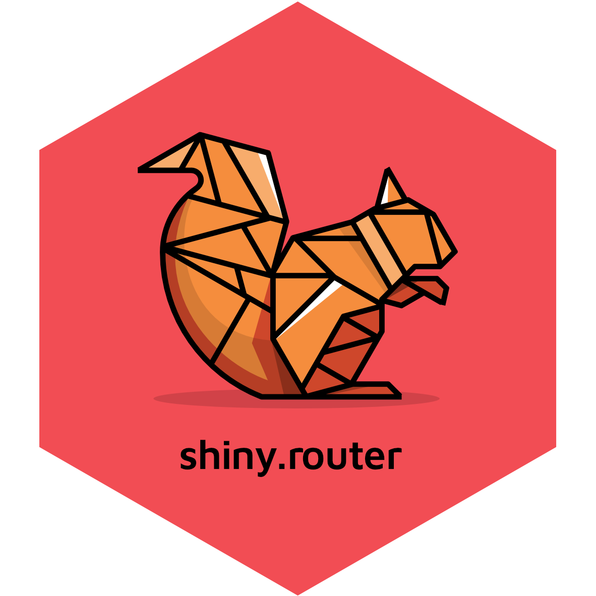

shiny.router 
A minimalistic router for your Shiny apps.
Now it’s possible to recreate a state of your app, by providing a specific URL, like:
router_ui(
route("<your_app_url>/main", mainPageShinyUI),
route("<your_app_url>/other", otherPageShinyUI)
)How to install?
It’s possible to install this library through CRAN
install.packages("shiny.router")The most recent version you can get from this repo using remotes.
remotes::install_github("Appsilon/shiny.router")How to use it?
Basic usage:
library(shiny)
library(shiny.router)
root_page <- div(h2("Root page"))
other_page <- div(h3("Other page"))
ui <- fluidPage(
title = "Router demo",
router_ui(
route("/", root_page),
route("other", other_page)
)
)
server <- function(input, output, session) {
router_server()
}
shinyApp(ui, server)Check the tutorial for more details on how to start using shiny.router.
Examples
An application that showcases the shiny.router features can be found here:
It was built using two other Appsilon Open Source packages:
-
rhino- an R package designed to help building high quality, enterprise-grade Shiny applications at speed. -
shiny.fluent- Microsoft’s Fluent UI for Shiny apps.
You can also visit examples directory for some complete samples.
How to contribute?
If you want to contribute to this project please submit a regular PR, once you’re done with new feature or bug fix.
Reporting a bug is also helpful - please use GitHub issues and describe your problem as detailed as possible.
Appsilon

Appsilon is a Posit (formerly RStudio) Full Service Certified Partner.
Learn more at appsilon.com.
Get in touch opensource@appsilon.com
Explore the Rhinoverse - a family of R packages built around Rhino!